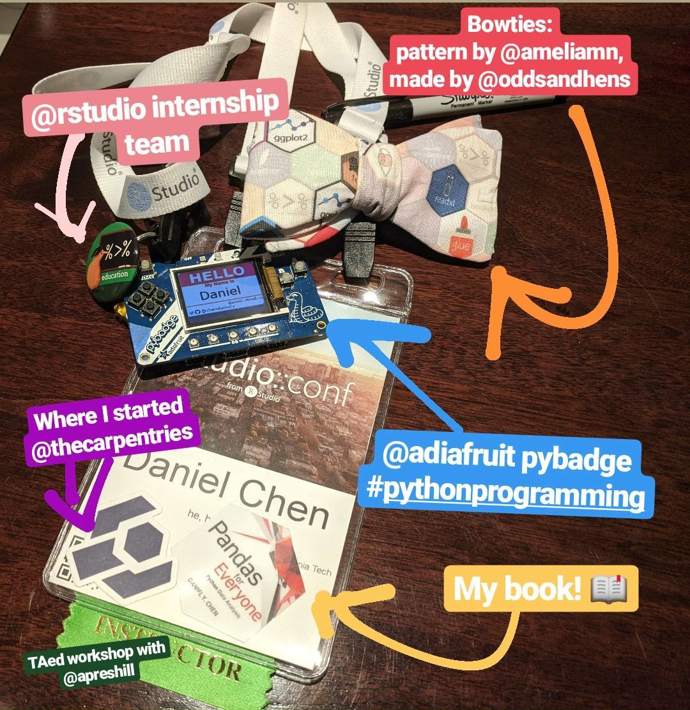
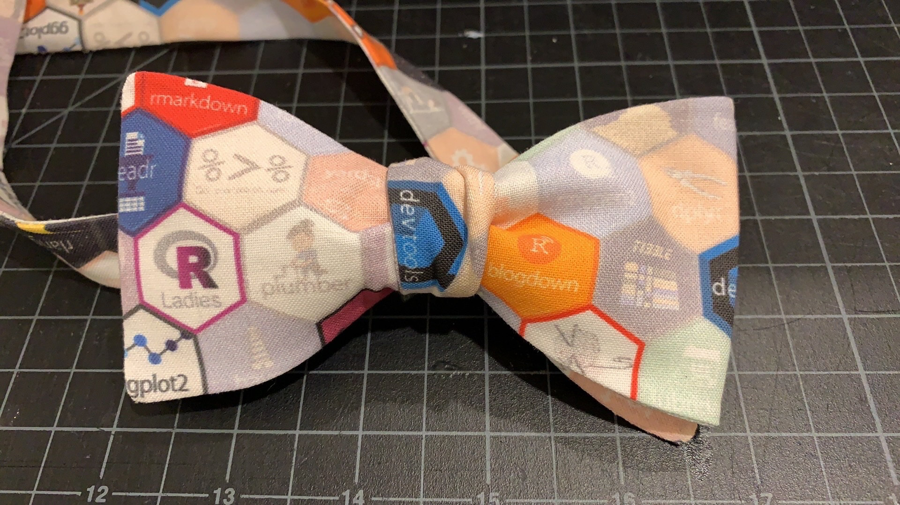
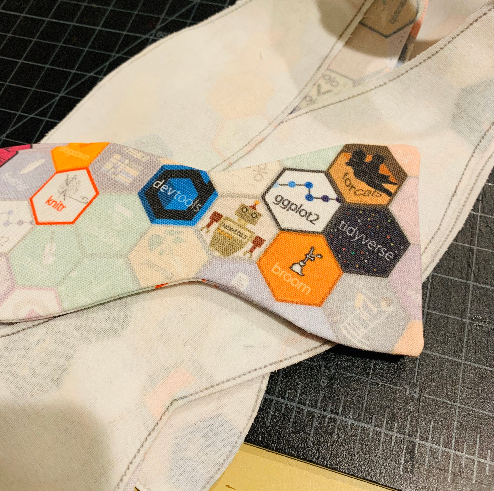
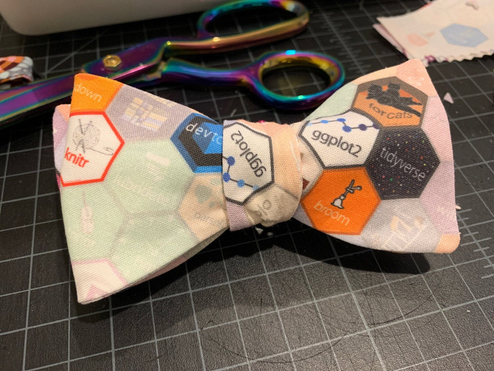
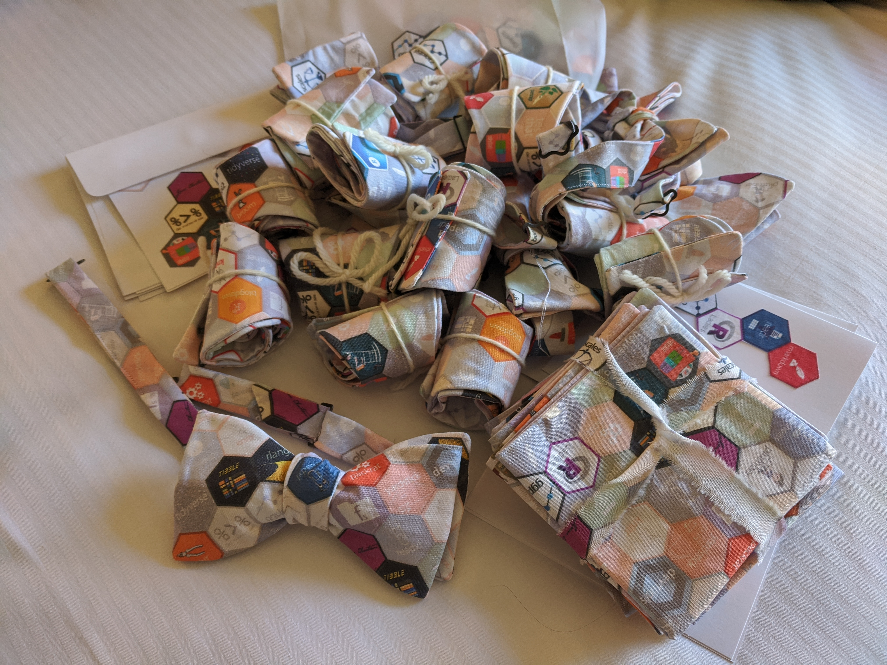
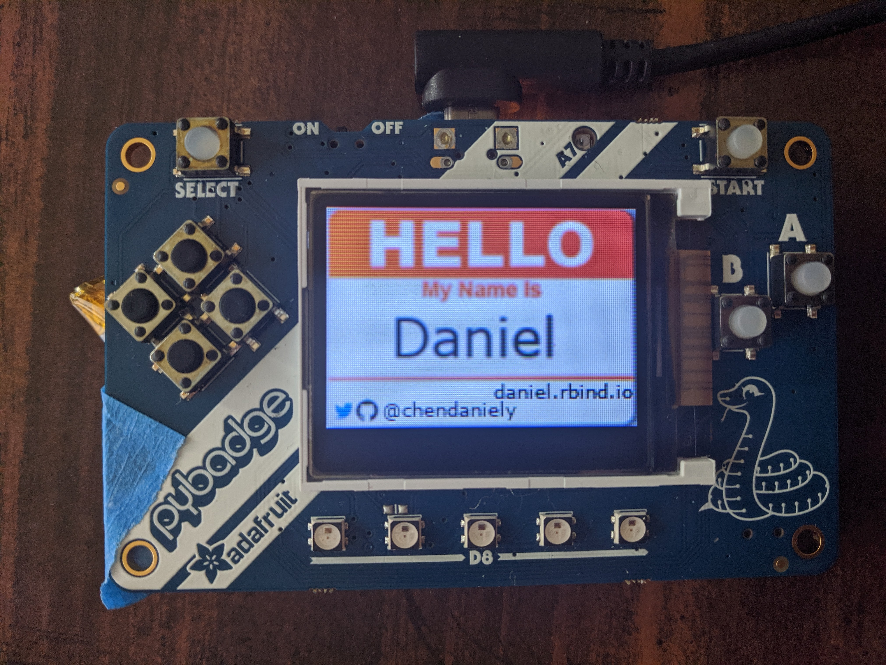

R Hex Bowtie
If you were at rstudio::conf you may have seen me walking around with my conference badge and wondered what everything is.
Yes. That’s the #rstats hex bowtie. Yes, I lost it when Hadley was wearing it for the conference opening notes.
Thanks to Daniel Chen for the awesome #rstats bow tie! https://t.co/OPnawWrltG pic.twitter.com/XZUj5z7Ox4
— Hadley Wickham (@hadleywickham) January 29, 2020
Bow Ties are Cool
The R hex fabric is by Amelia McNamara, which you can get on the GitHub repo or buy directly on her Spoonflower page
Now that the cat’s out of the bag 😻… Yes, I made myself an #rstats/#tidyverse dress!
— AmeliaMN (@AmeliaMN) August 16, 2019
📸 @alexandrabyrne with the angles pic.twitter.com/6m1nJotIwN
For my particular use case, I needed smaller hexes because bow ties are just smaller than dresses. Here’s my modified 1-inch r hex fabirc
I knew I wanted to make bowties since I gave a lightning talk during RStudio internship. And Hadley is a bow tie aficionado. After talking to a few people, I was directed to get them made on Etsy, and so the hunt to find someone began in November.
The tricky part about finding custom bow ties on Etsy is that many of the sellers don’t make adjustable bow ties. I eventually found Megan’s Shop, which allowed me to get adjustable bowties and use custom fabric. I placed an order for 20 with the only constraint of one of the bow ties must have ggplot2 and tidyverse visiable when it is tied (for Hadley). This is when Megan told me about the original hex size needed to be smaller for the bow tie. I also got a few pocket squares in my order too.
I went though the process of creating the smaller hex pattern on Spoonflower and shipeed 6 yards of the pattern for my order in the “Petal Signature Cotton”. I had to ship Megan the fabric directly since you need to order a test sample before other people can purchace the pattern. It was a gamble, but it was the holiday season, and the conference was coming up fast.
Megan was great, I got a series of photos about the entire process.

The fabric is thicker than what I have used previously as spoonflower recently changed to the ‘petal cotton’. I’m just retooling the pattern and interfacing a bit to accommodate it. :)


Also- here is how the one tie with the prominent ggplotand tidyverse was cut out.
I got the order 2 weeks before the conference and it all turned out wonderfully.

Here’s the link to her shop and twitter. I even convinced her to write a blog post of her own .
PyBadge Name Badge

I went to PyCon for the first time in 2019. And the #pythonhardware community is amazing. The conference was filled with people with their own name tags. I though I’d introduce this to the R community. And also, gives a way for people to say hello to me, instead of the other way around :)
I got the bigger PyBadge (they also make a smaller one ). I really like how Adafruit put python on their circuit boards using CircuitPython. It makes programming way more accessiable than using an Arduino, since you can do all the programming in Python!
In my case I dragged my picture into a folder and it just goes through them in a slide show.
The Rest
I interned for Rstudio over the summer, where I was on the Education Team. During rstudio::conf, I TA’ed for the Introduction to Machine Learning with the Tidyverse workshop.
I started teaching as an instructor for The Carpentries. Which eventually led me to writing my book, Pandas for Everyone!
Hope you enjoyed reading about my conference badge! I look forward to seeing people in the R community add flair to the badges in the future!